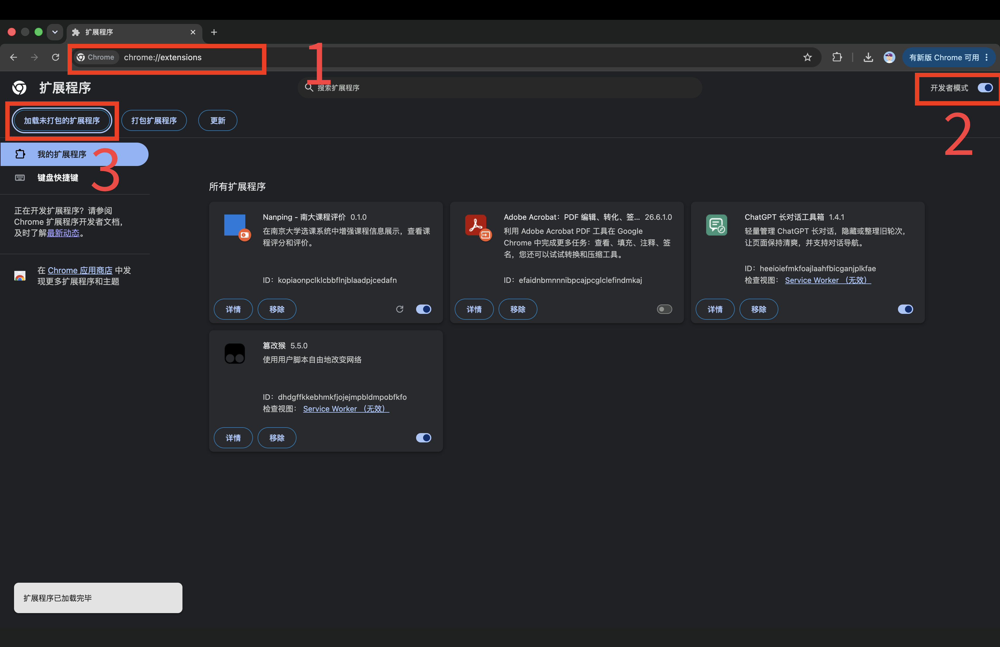
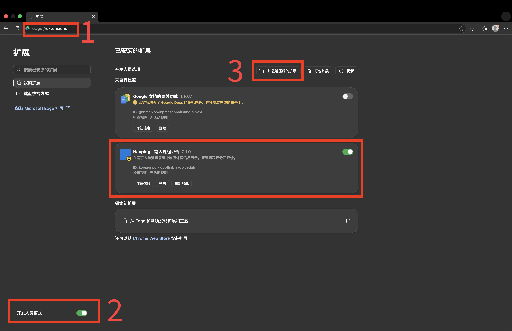
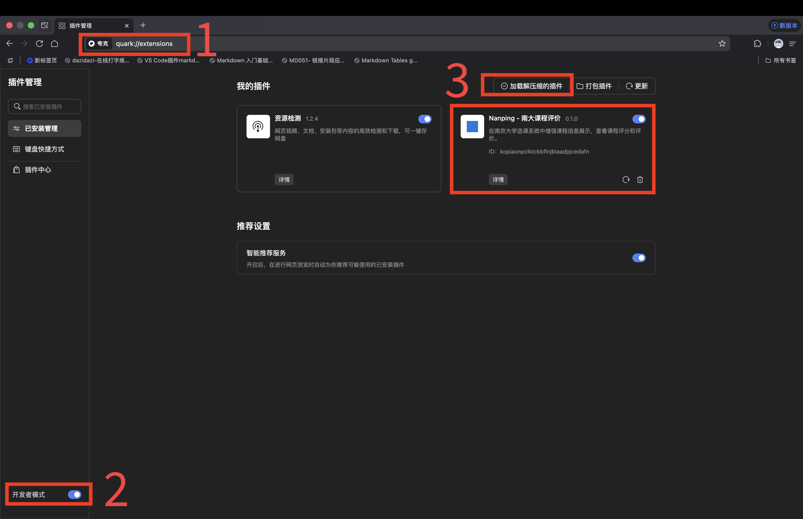
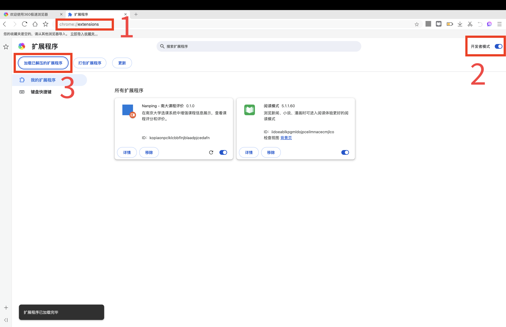
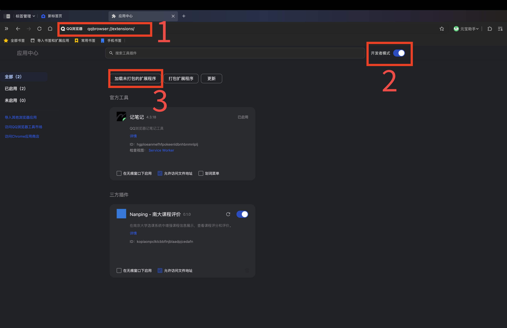
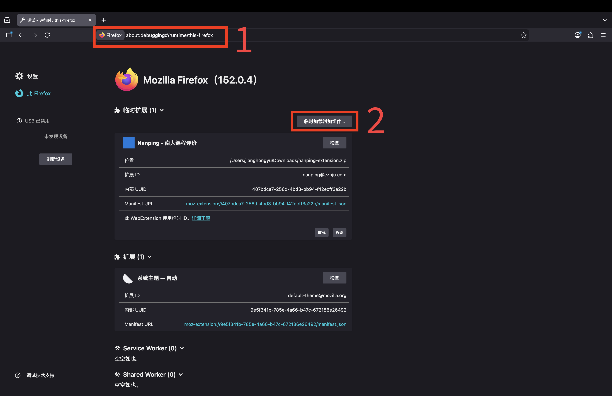

浏览器插件
安装 Nanping 浏览器插件后，在南京大学选课系统中即可一键查看课程评分和评价。
支持 MacOS / Windows 平台的各种主流浏览器。
遇到任何问题，欢迎加入 QQ 群反馈：1048569521
下载
download 下载 Nanping 插件 v0.1.0（ZIP）
下载后请解压，按照下方教程安装即可。
安装教程
首先，请在上面下载「Nanping」插件。你会得到一个 zip 压缩包，文件名是「nanping-extension.zip」。
接着，请在你的电脑上把「nanping-extension.zip」解压，得到一个文件夹「nanping-extension」。
下面的操作，根据你使用的浏览器不同而略有差异。
Chrome

- 在浏览器顶部地址栏中输入
chrome://extensions并回车； - 在打开的页面中，点击右上角的按钮，打开「开发者模式」；
- 点击左上角出现的「加载未打包的扩展程序」，选择你刚刚解压得到的文件夹「nanping-extension」。
如图所示，「所有扩展程序」一栏中出现了「Nanping」插件，即为安装成功。登录南大选课网站，「Nanping」插件就会开始工作。
Edge

- 在浏览器顶部地址栏中输入
edge://extensions并回车； - 在打开的页面中，点击左下角的按钮，打开「开发人员模式」；
- 点击右上角出现的「加载解压缩的扩展」，选择你刚刚解压得到的文件夹「nanping-extension」。
如图所示，「已安装的扩展」一栏中出现了「Nanping」插件，即为安装成功。登录南大选课网站，「Nanping」插件就会开始工作。
夸克

- 在浏览器顶部地址栏中输入
quark://extensions并回车（其实输入chrome://extensions也行）； - 在打开的页面中，点击左下角的按钮，打开「开发者模式」；
- 点击右上角出现的「加载解压缩的插件」，选择你刚刚解压得到的文件夹「nanping-extension」。
如图所示，「我的插件」一栏中出现了「Nanping」插件，即为安装成功。登录南大选课网站，「Nanping」插件就会开始工作。
360 系列浏览器（以 360 极速浏览器为例）

- 在浏览器顶部地址栏中输入
chrome://extensions并回车； - 在打开的页面中，点击右上角的按钮，打开「开发者模式」；
- 点击左上角出现的「加载已解压的扩展程序」，选择你刚刚解压得到的文件夹「nanping-extension」。
如图所示，「所有扩展程序」一栏中出现了「Nanping」插件，即为安装成功。登录南大选课网站，「Nanping」插件就会开始工作。
QQ 浏览器

- 在浏览器顶部地址栏中输入
qqbrowser://extensions/并回车； - 在打开的页面中，点击右上角的按钮，打开「开发者模式」；
- 点击左上角出现的「加载未打包的扩展程序」，选择你刚刚解压得到的文件夹「nanping-extension」。
如图所示，「三方插件」一栏中出现了「Nanping」插件，即为安装成功。登录南大选课网站，「Nanping」插件就会开始工作。
Firefox

- 在浏览器顶部地址栏中输入
about:debugging#/runtime/this-firefox并回车； - 在打开的页面中，点击右上角的「临时加载附加组件…」，选择你刚刚下载的压缩文件「nanping-extension.zip」。
如图所示，「临时扩展」一栏中出现了「Nanping」插件，即为安装成功。登录南大选课网站，「Nanping」插件就会开始工作。
注意，由于 Firefox 的限制，重启浏览器后「Nanping」插件会被自动移除。要想继续使用，需要重新进行上述操作。
因此，「南评」更推荐使用本页面提到的其他浏览器。
我使用的是其他浏览器
「Nanping」插件基于 Manifest V3 开发，而大多数主流浏览器均支持这类插件，安装方式与上面提到的类似。
你也可以自行搜索 / 询问 AI：「我的浏览器是***，如何安装基于 Manifest V3 的浏览器插件？」并按照给出的步骤操作。
但是，「Nanping」插件无法安装在个别非 Chromium 内核的浏览器，比如 Safari、Internet Explorer。你可以在上面提到的浏览器中体验「Nanping」插件。
使用方法
- 登录南京大学选课系统。
- 进入选课页面后，插件会自动在每门课程旁显示评分、评论数、「查看评价」按钮和「写评价」按钮。
- 点击「查看评价」可唤起侧面面板，同屏查看所有评价。
- 点击「写评价」可跳转到南评网站查看完整评价和撰写评价。
常见问题
我的浏览器里能用这个插件吗？
所有支持 Chrome Extension Manifest V3 的浏览器均可使用，包括 Chrome、Edge、Firefox、360 系列浏览器、搜狗浏览器、QQ 浏览器 等各种主流浏览器。很遗憾不支持 Safari 浏览器。
插件无法正常工作？
请确认：1）已正确安装插件；2）当前页面为选课系统课程列表页；3）网络连接正常。如仍无法使用，请加入 QQ 群：1048569521 反馈。
如何更新插件？
来到此页面下载最新版本，覆盖原有文件夹，然后在 chrome://extensions（Edge 为
edge://extensions）中点击插件右下角的刷新按钮。或者按照安装教程重新安装一遍。
隐私与安全
「南评」非常重视你的隐私和账号安全。下面用通俗易懂的语言，说明插件做了什么、不做什么。
插件会读取什么？
- ✅ 登录后选课页面上公开可见的信息（如课程号、课程名、授课教师等），仅用于搜索课程评价和防止滥用。
插件绝对不会做什么？
- ❌ 不读取你的密码。
- ❌ 不记录你的键盘输入。
- ❌ 不进行选课操作（不会自动点击 / 修改选课结果等）。 本插件不是抢课插件，不与官方选课服务器建立任何通信，完全不会影响选课秩序，也不会损害你和其他学生的正常选课权益。
- ❌ 不读取你的Cookie 或浏览器存储数据。
- ❌ 不向任何第三方发送数据，所有通信仅发生在你的浏览器和南评服务器（npapi.eznju.com）之间。
代码公开可查
本插件，包括「南评」前后端 的全部代码在 GitHub 上开源。
插件核心逻辑就在 content_dev.js 一个文件里，任何人（包括你自己）都能打开查看每一行代码，确认没有任何隐藏行为。
权限说明
浏览器安装插件时会显示两条权限声明，可能会引发你的顾虑。下面说明这两个权限的实际含义：
- 「访问 xk.nju.edu.cn」—— 插件不会向教务系统服务器发送任何请求。 这个权限的实际含义是「允许插件在选课网页上显示内容」。插件仅读取页面上已经显示的课程信息，在自身渲染的侧边面板里展示评价数据。
- 「访问 npapi.eznju.com」—— 插件把页面上读取到的课程信息（课程号、课程名、教师等）发送给「南评」服务器，获取对应的评价和评分。这是插件唯一通信的外部地址。